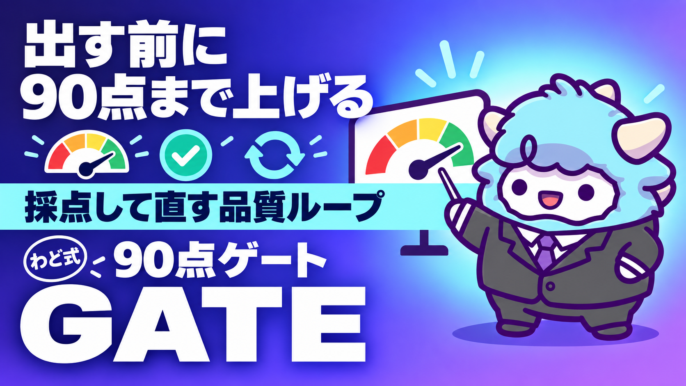

90点ゲート 品質ループ
出す前に10項目で採点する。90点未満は出さない
このページが特典の本体です。下へスクロールして使ってください90点ゲート 品質ループ
AIが一発で出した文章を、そのまま出していませんか。この特典は「注釈→10項目採点→改善」を回して、出す前に自分で90点に届かせるための仕組みです。感覚ではなく、点数で判断できるようになります。
はじめに
AIに書かせた文章を読んで、「悪くはないけど、なんかAIっぽいな」と感じたことはありませんか。その感覚は正しいのですが、「なんかっぽい」で止まると、直し方が分かりません。直そうとしても同じ言い回しをこねくり回すだけで、結局そのまま出してしまう。これが一番もったいないパターンです。
この特典は、AIで収益を上げる過程で必ず出会う「出す前の最後の判断」を、感覚から仕組みに変えるためのものです。note記事・Xの投稿・LINE配信・クライアントへの納品物、どれにでも使えます。中身は3つです。
- 注釈 — 良い点と問題点を、具体的に書き出す作業
- 採点 — 10項目×10点、合計100点満点で数値化する
- 改善ループ — 90点未満なら直して、最大3回まで回す
感覚で「まあいいか」と出すのをやめて、点数が90点に届くまでは出さない。このルールを1つ持つだけで、発信の質は積み上がっていきます。
この特典の進め方
- まず「何を任せるか」を読み、AIに任せる部分と自分で最後に決める部分の線引きを頭に入れる（5分）
- 「指示書・シートの全文」から、使っているAIに合わせて設置する - Claude Codeをお使いの方 → Skillファイルをそのまま保存する - ChatGPTやGeminiをお使いの方 → 「最初に投げるプロンプト」を毎回コピーして使う - この文書自体をNotebookLMに読み込ませ、音声で概要を聞いておくと、ルールが体に入りやすくなります
- 直近で出そうとしている文章を1つ選び、実際に採点してみる
- 90点に届かなければ、指摘された項目のうち一番低い点数の項目から直す
- 週に1回、「運用の型」に沿って自分の減点パターンを振り返る
読むだけでは点数は上がりません。手元にある文章を1本、実際に採点するところまでが今日のゴールです。
最初のゴール（今日やる1つ）
今、公開しようとしている文章(下書きでも構いません)を1つ選び、このあとの「10項目の採点シート」で実際に採点してください。何点だったか、どの項目が一番低かったかまで、今日中に出すのが最初のゴールです。
何を任せるか（人とAIの線引き）
90点ゲートは「AIに全部判定させる仕組み」ではありません。任せてよい部分と、自分で決めるべき部分がはっきり分かれています。
AIに任せてよいこと
- 注釈(良い点・問題点)を、項目ごとに具体的に書き出す一次作業
- 10項目それぞれの暫定スコアを付ける一次採点
- 「この段落は具体性が足りない、こう直すと数字が入る」といった改善案の提示
- 3回のループの間、同じ観点で機械的にチェックし続けること(人間だと飽きて雑になりやすい部分)
自分で決めること
- 最終的に「これは自分の言葉として出せるか」の判断
- 数字・実績・他者の発言など、事実として書いてよいかの裏取り
- 90点を超えていても、直感的に違和感が残る場合に出すのを止める判断
- 3回改善しても90点に届かないとき、「表現」ではなく「そもそもの方向性」がずれていないかの見直し
ここで一番大事な線引きは、AIの自己採点は甘くなりやすいという前提を持つことです。AIは基本的に「相手を助けたい」方向に寄るため、7点の項目を8点と言ってしまうことがあります。数値をそのまま信じず、「なぜその点数なのか」の理由まで必ず読んでから、自分の目でもう一度確認してください。
つくり方の手順
- content種別を決める — note記事なのか、Xの投稿なのか、LINE配信なのか、クライアントへの納品物なのか。種別によって、あとで使う「型別3項目」が変わります
- 共通7項目＋型別3項目、合計10項目のシートを用意する(「指示書・シートの全文」にコピー用テンプレートがあります)
- ドラフトを1本用意する — この時点ではまだ採点しません
- 注釈を書く — 良い点を2つ以上、問題点を「箇所・何が問題か・どの項目で減点になるか・直し方」の4点セットで書き出す。注釈を飛ばしていきなり採点すると、直す根拠が残らず、次に似た失敗を繰り返します
- 10項目を採点する — 各項目に「なぜその点数か」を1行添える。「なんとなく8点」は禁止です
- 合計点を出す — 90点以上ならそのまま出してよい。90点未満なら次のループへ
- 改善する — 一番点数が低い項目から、注釈で書いた直し方に沿って修正する
- 再注釈→再採点 — 同じ手順を繰り返す。最大3回まで
- 3回で90点に届かない場合は止まる — このときの原因は、たいてい「文章の巧拙」ではなく「誰に向けて何を言いたいのかが、そもそも定まっていない」ことです。書き直す前に、ターゲットと結論を1文で言い切れるか確認してください
この9ステップのうち、AIに投げるのは4・5・7・8です。1・2・3・6・9は自分で決めます。
指示書・シートの全文
Claude Code版(Skillファイル)
Claude Codeをお使いの方は、以下を ~/.claude/skills/quality-gate-90/SKILL.md として保存してください。保存後は「採点して」「90点ゲート通して」と話しかけるだけで、注釈から採点、改善ループまで自動で進みます。
---
name: quality-gate-90
description: 対外に出す文章(note記事・SNS投稿・LINE配信・クライアント納品物など)を、注釈→10項目採点→改善ループで90点に届くまで磨くSkill。90点未満は出さない。
version: "1.0.0"
---
# 90点ゲート 品質ループ
## 使う場面
- 発動: 「採点して」「90点ゲート通して」「これ、出していい?」
- 対象: note記事・SNS投稿(X/Instagram/Threads)・LINE配信・メール・クライアントへの納品物
## Step 0: content種別を確認する
種別が不明なら、以下から選んでもらう。
1. note記事 2. SNS投稿 3. LINE配信・メール 4. クライアント納品物
## Step 1: 注釈を書く(採点の前に必須)
良い点を2つ以上、問題点を以下の4点セットで書き出す。注釈なしでStep 2に進むことを禁止する。
| # | 箇所 | 問題 | 減点項目(下表の番号) | 直し方 |
|---|------|------|------|--------|
## Step 2: 共通7項目を採点する(各10点)
1. ターゲット適合 — 誰に向けた話か明確で、その人の痛み・望みに触れているか
2. 自分の言葉になっているか — AIの言い回しをそのまま残していないか
3. AI臭の排除 — 「さらに/また/加えて」の連打、「〜することが可能です」、段落の長さが均一、主語のない一般論、意見のない安全な表現、が無いか
4. 一次情報/具体性 — 抽象論ではなく、体験・数字・手順があるか
5. 構成の論理性 — 読者が迷わず最後まで読める流れになっているか
6. 次の行動への導線 — 読んだ後に「今日これをやる」と決められるか、CTAが唐突でないか
7. ルール・規約準拠 — 媒体の規約、事実確認、結果を約束するような言い切りが無いか
## Step 3: 型別3項目を採点する(content種別に応じて選ぶ)
- note記事: 読了動機の持続／行動変容／差別化
- SNS投稿: フックの強さ(1行目で止まるか)／凝縮度(無駄がないか)／投稿単体での完結
- LINE配信・メール: 1対1感(一斉配信に見えないか)／次通への期待／シーケンスの論理性
- クライアント納品物: 相手の言葉で書かれているか／根拠(数字・出典)の明示／次のアクションが具体的か
## Step 4: 合計点を出し、判定する
90点以上 → PASS(出してよい)。90点未満 → Step 5へ。
## Step 5: 改善する
一番点数が低い項目から、Step 1の「直し方」に沿って修正する。修正後、Step 1〜4を繰り返す。**最大3ループ。**
## Step 6: 3ループ後も90点未満なら止まる
「表現」ではなく「方向性」がずれている可能性が高い。ユーザーに、ターゲットと結論を1文で確認してから再設計する。
## ルール
1. 注釈を飛ばして採点しない
2. 各項目の点数には必ず1行の理由を添える(「なんとなく」を禁止)
3. 自己採点は甘くなりやすい前提で、7点以下の項目は必ず改善してから提出する
4. 成果を保証する表現・断定的な稼げる系の表現は、点数に関わらず削除する
5. 3ループを超えて延々と言い回しだけ変え続けない(完璧主義の罠)
採点シート(コピーしてNotion・スプレッドシートに貼る用)
| # | 項目 | 点数(/10) | 理由(1行) |
|---|---|---|---|
| 1 | ターゲット適合 | ||
| 2 | 自分の言葉になっているか | ||
| 3 | AI臭の排除 | ||
| 4 | 一次情報/具体性 | ||
| 5 | 構成の論理性 | ||
| 6 | 次の行動への導線 | ||
| 7 | ルール・規約準拠 | ||
| 8 | (型別1) | ||
| 9 | (型別2) | ||
| 10 | (型別3) | ||
| 合計 | /100 |
NotebookLMの使い方
Skillを使わない場面(移動中や、Claude Codeを開いていないとき)のために、この文書自体をNotebookLMに読み込ませておくと便利です。
- NotebookLMに新しいノートブックを作り、この特典の本文をソースとして追加する
- 「このソースを音声で要約して」と依頼し、音声概要(オーディオオーバービュー)を作る
- 発信を始める前や、週の振り返りの前に聞き流しておく
10項目を毎回全部覚えている必要はありません。「今どの項目で減点されやすいか」の感覚だけ持っていれば、採点のときにシートを見ながら思い出せます。
運用の型(週次の見直し)
採点は1本ずつやるものですが、溜まったデータを週に1回振り返ると、自分の弱点が見えてきます。以下のような表を1枚作り、採点するたびに1行追加してください。
| 実施日 | content種別 | 初回スコア | 最終スコア | ループ回数 | 一番低かった項目 | 気づき |
|---|---|---|---|---|---|---|
週次の見直しでは、次の3つを確認します。
- 一番低かった項目に偏りがあるか — 毎回同じ項目(例えば「AI臭の排除」)で落ちているなら、それは書き方の癖です。次に書くときは、その項目だけ最初から意識する
- ループ回数が減っているか — 最初は3回かかっていたのが2回、1回と減っていれば、90点ゲートが体に馴染んできている証拠です
- 90点を超えた文章の共通点を残しているか — 高得点だった文章の書き出し・構成を、自分用の「型」としてメモに残しておく。次に似た内容を書くとき、ゼロから考えずに済みます
このメモが増えるほど、自分の「うまくいったパターン集」が育ちます。逆に、90点未満で止まった文章の記録も残しておくと、同じ失敗を繰り返しにくくなります。
最新AI(2026年9月時点)での変わり目(取得日: 2026-09-06)
2026年9月3日、OpenAIが新しい大規模モデルを発表しました。目立った特徴は、画面の情報を読み取って、承認された範囲でアプリを操作できる機能(いわゆるコンピューター操作機能)です。この機能は数日かけて順次利用可能になる案内になっており、プランに含まれていても、自分のアカウントにまだ表示されていないことがあります。使えるかどうかはご自身の画面で確かめてください。
90点ゲートの運用における意味は、次の2点です。
- 採点の一次作業を、より広い範囲でAIに任せられる可能性が出てきました。 画面を横断してチェックする作業(例えば、複数の投稿を並べて一貫性を見る)も、今後任せやすくなっていくと見られます。ただし、最終的に「出してよいか」を決めるのは変わらず自分です
- 画面に映った情報をそのまま指示として読み取ってしまう可能性が指摘されています。 採点のためにAIへ見せる文章や画面には、確認していない情報や広告的な文言を混ぜないよう注意してください。信頼できる素材だけを渡すことが、これまで以上に大切になっています
10項目のルール自体は、AIがどれだけ賢くなっても変わりません。新しいAIが出るたびに項目を作り直す必要はなく、任せる範囲が広がっていくだけだと考えてください。
最初に投げるプロンプト
以下の文章を、90点ゲートの基準で採点してください。
【content種別】: [note記事／SNS投稿／LINE配信・メール／クライアント納品物 のいずれか]
【対象読者】: [誰に向けた文章か]
【採点対象】
[ここに文章を貼る]
【手順】
1. 良い点を2つ以上、問題点を「箇所・問題・減点項目・直し方」の4点セットで書き出してください
2. 共通7項目(ターゲット適合/自分の言葉になっているか/AI臭の排除/一次情報・具体性/構成の論理性/次の行動への導線/ルール・規約準拠)を各10点で採点し、理由を1行ずつ添えてください
3. content種別に応じた型別3項目も採点してください
4. 合計点を出し、90点以上ならPASS、90点未満なら一番点数が低い項目から直す提案をしてください
よくある失敗 7つと直し方
- 注釈を飛ばしていきなり採点する → 根拠が残らず、次も同じ失敗をする。必ず注釈から始める
- AIの自己採点をそのまま信じる → 「なぜその点数か」の理由を読み、7点以下の項目は自分の目でも確認する
- 90点を超えた瞬間に安心して、違和感を無視して出す → 点数はあくまで目安。直感的な違和感が残るなら出さない
- 3回のループを超えて、同じ言い回しを永遠にこね続ける → 3回で届かないのは表現の問題ではなく方向性の問題。ターゲットと結論を1文で見直す
- すべてのcontentに同じ型別3項目を使う → note記事とSNS投稿では見るべき観点が違う。種別ごとに正しい3項目を選ぶ
- 高得点だった文章を記録せずに捨てる → 自分の「うまくいったパターン集」が育たない。週次の見直しで必ず残す
- 成果を保証する表現を、点数が高いからという理由で残す → 点数に関わらず、断定的な稼げる系の表現は必ず削除する
安全に使うための注意
- 採点の過程でAIが提示する改善案の中に、事実として確認していない数字や実績が混ざることがあります。発信前に必ず自分で裏取りしてください
- 「必ず結果が出ます」「誰でもできます」のような断定表現は、点数がどれだけ高くても採用しないでください
- クライアントの成果物を採点する場合、相手の個人情報や、公開していない実績数値を文章に含めないでください
- 各SNS・プラットフォームの利用規約や広告表示に関するルールは媒体ごとに異なります。投稿前に該当する規約を確認してください
- 90点ゲートは完璧主義の言い訳にしないでください。期限があるcontentは、3ループで区切りをつけて出す判断も必要です
つまずいたときに聞くプロンプト
[項目名]の点数が、3回改善してもずっと[点数]点から上がりません。
私が直したのは[やったこと]です。
この項目で10点にするには、具体的にどの部分を、どう変えればいいか教えてください。
一般論ではなく、上に貼った文章の該当箇所を指定してください。
用語集
| 用語 | 意味 |
|---|---|
| 90点ゲート | 10項目×10点で採点し、90点未満は出さないという判断基準 |
| 注釈 | 採点の前に行う、良い点と問題点を具体的に書き出す作業 |
| 改善ループ | 注釈→採点→改善を繰り返す一連の流れ。最大3回 |
| 共通7項目 | contentの種類によらず、常に採点する7つの観点 |
| 型別3項目 | note記事・SNS投稿・LINE配信などcontentの種類ごとに変わる3つの観点 |
| AI臭 | 「さらに/また/加えて」の連打や、均一な段落など、AIが書いたと分かりやすい文体の特徴 |
| うまくいったパターン集 | 90点を超えた文章の書き出し・構成を自分用に残したメモ |
| エスカレーション | 3回改善しても90点に届かないとき、表現ではなく方向性そのものを見直すこと |
出す前の品質チェック(10項目)
- 採点の前に、注釈(良い点・問題点)を書いたか
- 共通7項目と、content種別に合った型別3項目を選んだか
- 各項目の点数に、「なぜその点数か」の理由を1行添えたか
- 合計90点に届いているか(届いていなければ出していないか)
- AIの自己採点をそのまま信じず、自分の目でも確認したか
- 3回改善しても届かない場合、表現でなく方向性を見直したか
- 成果を保証する表現・断定的な稼げる系の表現を削除したか
- 90点を超えた文章の共通点を、自分用のメモに残したか
- クライアントの成果物なら、非公開の情報を含めていないか
- 期限のあるcontentで、完璧主義の言い訳にしていないか
次の一手
この特典は、稼ぎ方より稼ぐ順番のSTEP2(コンテンツ商品)とSTEP3(SNS・ローンチ)の両方で使う、出す前の最後の関所です。どのSTEPにいても、出す前にこの10項目を通す習慣があるかどうかで、積み上がる発信の質が変わります。面談では、あなた専用の1枚(特注のロードマップ)を一緒に作ります。
最終チェックリスト
- [ ] Skill、またはNotebookLMの音声概要を、自分の環境に設置した
- [ ] 直近の文章を1本、実際に10項目で採点した
- [ ] 90点未満だった項目を、注釈の「直し方」に沿って改善した
- [ ] 3回改善しても届かないときは、方向性を見直すルールを理解した
- [ ] 「安全に使うための注意」5項目を確認した
- [ ] 週次の見直し表を1枚用意した